にゃん生初のホットカーペット [梅吉]
先日作った梅吉のベッドにホットカーペットを仕込んでみました。

ぬくぬくあったかいカーペットですよ。
肉球型のコントローラーですよ。
温度が５度刻みで上げ下げ出来るんですって。
私は電気毛布が苦手で（湯たんぽ派）
梅吉用にもこの手の製品を買うつもりはありませんでした。
が、新しいベッドにはサイズなどがぴったりのような気がして迷っていたら・・・
すでにおっとがポチっていましたよ(⌒-⌒;


各種セッティングして上に乗せてみるとちまっと落ち着きました
（この時は35℃設定）
朝ごはんを食べたらしばらくここで温まるのが日課になりましたよー！
（朝一番は40℃設定）
おとーさんのベッドに二度寝に行かなくなるというオチがw
おとーさんは嘆いてますが、にゃん生初のホットカーペット、梅吉には悪くないようです＾＾
取説には「獣医師がお勧めする適温は40℃」と書いてあるのですが
40℃になったところで触ってみたら結構熱い。
猫の体温に近い温度の様ですが低温やけども心配なので
ある程度あったまったら35℃に下げてます。
ホットカーペットをお持ちの方は設定温度をどうしてますか？
低・中・高の三段階切り替えだと中？

湯たんぽには湯たんぽの良さがあるようでこちらも引き続き使ってくださってます。
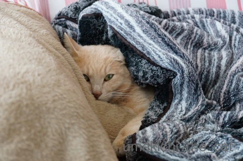
最低気温が５℃以下、最高気温が10℃以下だと途端に動かなくなりますよ。
あにゃたは変温動物ですかー。
そのうち冬眠するかも！？
梅吉、マイクロチップを装着する。 [梅吉]
今月12日は梅吉の定期受診の日でした。
梅吉は中性脂肪値が高い体質なので（生活習慣ではありません）
２歳半頃から薬を飲ませています。
（経緯に興味がある方はお薬生活が始まった頃の記事か
タグの“病院”でご覧になってくださいね。）
この日はご機嫌が悪くて先生の顔を見るなり「シャーーーーッツ！！」。
採血した別室からも「うぉ〜ん！ フシャーーーッツ！！」と
派手な声が聞こえてきました(⌒-⌒;
採血から帰ってきたところ。あちのピンクの包帯がまぶしいw
採血結果は・・・
肝機能が下がっていたのは何よりだったんですが以前よりも中性脂肪値が上がっている。
そこで一年とちょっと飲み続けていたカルニチンという錠剤を別の薬に変えることになりました。
今度の薬はメトグルコという代謝を上げて脂肪を分解する水薬。
（私が飲みたいwww）
朝夕0.2ccずつ注射器で吸い上げてフードの上に垂らします。
錠剤を乳鉢ですりつぶす作業がなくなりました。
この薬、なめてみたらちょっと苦いのですが食欲大魔神の梅吉は気にせず食べてます![[手（チョキ）]](https://blog.ss-blog.jp/_images_e/87.gif)
って採血が終わって結果を聞いてもまだ診察台の上の梅吉。
この日はむしろここからがメイン。

エリカラをつけて
![[猫]](https://blog.ss-blog.jp/_images_e/101.gif) むちゃくちゃ いやなよかんー！
むちゃくちゃ いやなよかんー！

ぷすっと。
あにすんじゃー！
これで終了。マイクロチップが入りました。エリカラつけてから終わるまで５秒くらい？
採血よりずっと早く終わります。
先日テレビでマイクロチップは麻酔なしで入れられる、と聞いてんんん？
色々調べてみて病院で先生に確認するとその通りだとのお返事。
私はマイクロチップの装着は全身麻酔の上メスで皮膚を切って埋め込むものだと思っていました。
なので去勢手術の時にマイクロチップまで気が回らなかったことをとっても後悔していたのです。
が、今回偶然目にしたテレビのニュースで正しい情報を知りここ数年のモヤモヤが解決しました。
同時にちゃんと調べていなかった自分の不勉強も反省・・・

（環境省のHPよりお借りしました）
マイクロチップの大きさです。
これを注射器状のもので首の後ろにぷすっと刺して挿入。
装着後梅吉は全く気にする様子はなく
家に帰った後は元気に走り回って遊んでいました。
マイクロチップを入れたあたり、触っても全くわかりません。
マイクロチップについては体に異物を入れることに抵抗があったり
そこまでしなくてもという意見、その他さまざまな理由で反対されている方もいらっしゃいます。
飼い主さんの考え方はそれぞれです。
なのでお勧めしているわけではありません。
ただ、麻酔＆手術不要で装着できて（個体差にも寄ると思いますが）
装着後も影響は見られないことを知っていただきたく
実体験を元に記事にしてみましたm(_ _)m
麻酔が必要なら無理かな・・・と諦めていた方もいらっしゃるかもしれないし。
とっくに知っていたわ！という方がほとんどかと思いますけどw(⌒-⌒; )
マイクロチップの情報を読み取るリーダーの普及率は
残念なことに市町村によって差があるようです。
大阪では大阪市内の全保健所、市や府が管理する保護施設すべてにリーダーがあるそうです。
もしも災害などで梅吉とはぐれてしまっても
私たちの元に帰ってくる確率が格段に高くなったかな、と思っています。
とある日。

このお手手にニヤニヤする0(≧▽≦)0
 ↑ガブッと一押し↑
↑ガブッと一押し↑
梅吉は中性脂肪値が高い体質なので（生活習慣ではありません）
２歳半頃から薬を飲ませています。
（経緯に興味がある方はお薬生活が始まった頃の記事か
タグの“病院”でご覧になってくださいね。）
この日はご機嫌が悪くて先生の顔を見るなり「シャーーーーッツ！！」。
採血した別室からも「うぉ〜ん！ フシャーーーッツ！！」と
派手な声が聞こえてきました(⌒-⌒;
採血から帰ってきたところ。あちのピンクの包帯がまぶしいw
採血結果は・・・
肝機能が下がっていたのは何よりだったんですが以前よりも中性脂肪値が上がっている。
そこで一年とちょっと飲み続けていたカルニチンという錠剤を別の薬に変えることになりました。
今度の薬はメトグルコという代謝を上げて脂肪を分解する水薬。
（私が飲みたいwww）
朝夕0.2ccずつ注射器で吸い上げてフードの上に垂らします。
錠剤を乳鉢ですりつぶす作業がなくなりました。
この薬、なめてみたらちょっと苦いのですが食欲大魔神の梅吉は気にせず食べてます
って採血が終わって結果を聞いてもまだ診察台の上の梅吉。
この日はむしろここからがメイン。

エリカラをつけて

ぷすっと。
これで終了。マイクロチップが入りました。エリカラつけてから終わるまで５秒くらい？
採血よりずっと早く終わります。
先日テレビでマイクロチップは麻酔なしで入れられる、と聞いてんんん？
色々調べてみて病院で先生に確認するとその通りだとのお返事。
私はマイクロチップの装着は全身麻酔の上メスで皮膚を切って埋め込むものだと思っていました。
なので去勢手術の時にマイクロチップまで気が回らなかったことをとっても後悔していたのです。
が、今回偶然目にしたテレビのニュースで正しい情報を知りここ数年のモヤモヤが解決しました。
同時にちゃんと調べていなかった自分の不勉強も反省・・・

（環境省のHPよりお借りしました）
マイクロチップの大きさです。
これを注射器状のもので首の後ろにぷすっと刺して挿入。
装着後梅吉は全く気にする様子はなく
家に帰った後は元気に走り回って遊んでいました。
マイクロチップを入れたあたり、触っても全くわかりません。
マイクロチップについては体に異物を入れることに抵抗があったり
そこまでしなくてもという意見、その他さまざまな理由で反対されている方もいらっしゃいます。
飼い主さんの考え方はそれぞれです。
なのでお勧めしているわけではありません。
ただ、麻酔＆手術不要で装着できて（個体差にも寄ると思いますが）
装着後も影響は見られないことを知っていただきたく
実体験を元に記事にしてみましたm(_ _)m
麻酔が必要なら無理かな・・・と諦めていた方もいらっしゃるかもしれないし。
とっくに知っていたわ！という方がほとんどかと思いますけどw(⌒-⌒; )
マイクロチップの情報を読み取るリーダーの普及率は
残念なことに市町村によって差があるようです。
大阪では大阪市内の全保健所、市や府が管理する保護施設すべてにリーダーがあるそうです。
もしも災害などで梅吉とはぐれてしまっても
私たちの元に帰ってくる確率が格段に高くなったかな、と思っています。
とある日。

このお手手にニヤニヤする0(≧▽≦)0
アワアワ・Hour [梅吉]
梅吉とプロレスしているおっとに
「おまたチョップしたことある？たるんっ！ぷよんっ！としてサイコー。」
と教えてみました。
ネコ変態なのでもちろんすぐに実行しますよ。
そうしたならば・・・
（7秒です＾＾音が出ます！音出して聞いてくださいね。）
梅吉はなぜか「アワ アワ」と変な鳴き方 (^_^;)
私がチョップしても鳴いたりしないのになんでかしら。
そういえば以前おしりをわしゃわしゃした時も
おっとだけに反応していたんですよねw
痛かったりするのかな？
おとーさんはおまたチョップしない方がいいね、なんて話してたんですが・・・
（30秒です＾＾音が出ます！）
これって自らチョップ待ちの姿勢になってますよねー(*>艸<)
後ろ足で若干の抵抗はしていますがイヤだったら本気で逃げるはず。
梅吉は腰ポンをねだる事はないのですがまさかのおまたチョップ要求？
楽しいんだか快感なんだかイヤなんだかよくわからない男同士の時間
「梅吉とおとーさんの アワアワ・アワー（Hour)」と命名しましたm(_ _)m

アワアワ・Hourの後は陽のあたるベッドでぬくぬく。
今年は加湿器を出してみた [梅吉]
このところ空気の乾燥が激しいので3年ぶりに加湿器を出してみました。
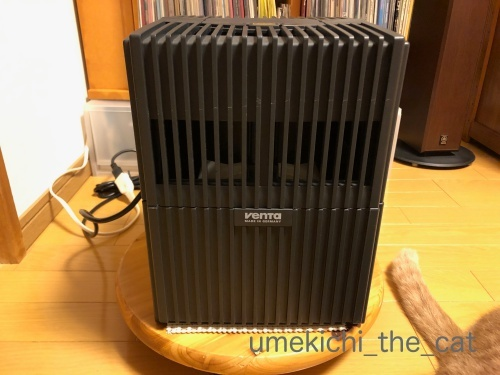
気化式の加湿器です。買ったのは10年くらい前かな。
加湿力はあまり高く無いのですが自然に潤う感じ？

中は単純な作りですよ。本体＝容器に水を満たして白いローラーを入れます。
フタ部分にファンがついていて風圧でローラーが回転して水が気化していきます。
ローラーは洗浄液につけて洗えば良いし本体は細かいパーツがないので
隅々まで洗えてお手入れが楽です。

フタ部分、本体の隙間から中の水とローラーが見えます。
・・・・・これが問題でして〜(^_^;)

幼い頃に一度見たことがあるっきりなのでほぼ初対面と言えるでしょう。
めっちゃへっぴり腰です(*>艸<)
なぜ一度見たきりかというと・・・ご想像通りです！
隙間から見える水と（梅吉は水が好き）ゆっくり回転するローラーが気になって気になって・・・
幼い梅吉はフタを頭で押しのけ中に手を突っ込んであたりを水浸しにしたのでしたw
以降加湿器は封印。
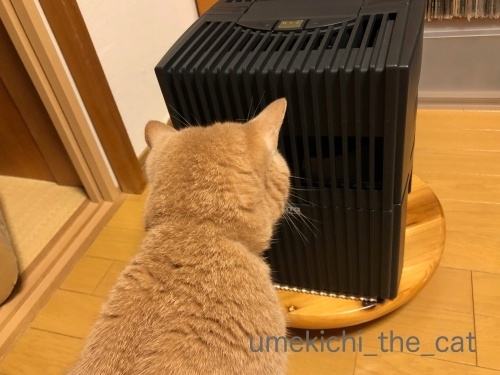
じーっと見てます。フタ、押しのけますか？


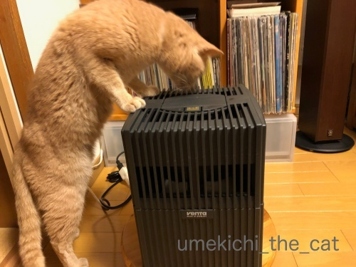

蹴り倒されるかと思いましたが無事でした。
これ以降は興味を示すことはなく加湿器と梅吉は共存しております＾＾
加湿器、あるのと無いのでは全然違いますねー。
今の所窓の結露にも影響は無いし、梅吉にいたずらもされないし早く出せば良かったわ。
みなさんは加湿器あるいは空気清浄機のようなものお使いですか？
2019年のえべっさんは宵えびすだよ！ [梅吉]
ちょっと時間が空いてしまいましたが先週10日のお話です。
1月10日はえびす神社の例祭「十日戎」通称「えべっさん」でした。
全国的に有名なのは兵庫 西宮神社のえべっさん。
朝の開門と同時に境内を走り抜け一番乗りが福男となるあの神社です。
大阪では今宮戎神社のえべっさん。せまーい路地みたいなところにある神社に
三日間で（9日：宵えびす 10日：本えびす 11日：残り福）100万人もの人出があるそうですよ。
我が家は毎年住吉大社のえべっさんに行ってます。
今年は9日の宵えびすに行ってきましたよ。
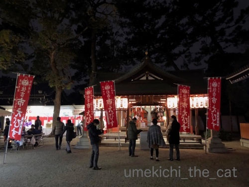
今宮戎はヘリコプターの中継が出て上空から混雑ぶりがリポートされるんですが
すみよっさんだとこんな感じ。余裕でお参り出来ます。

この日は朝から祈祷木のお焚き上げもあったのでその火がまだありました。

御祈祷をお願いする方も。
このお祭りのメインは福笹をいただいて「縁起物」といわれるチャームの様なものを付けてもらうこと。
我が家も福笹を授与していただき縁起物をつけてもらいました。
福笹にはおっちゃんたちが鐘を打ち鳴らしながら景気付けをしてくれました＾＾
（この景気付け、正式名称は何て言うんだろう・・・
この説明じゃ状況が良くわからないですよね。動画を探してみたのですが見つけられなかった・・・）
縁起物をつけてくれたのは去年と同じ福おばちゃんw
今年もやっぱりおまけしてくれました
ビバ！おばちゃん同士のシンパシー0(≧▽≦)0
そして我が家の福笹の総仕上げは
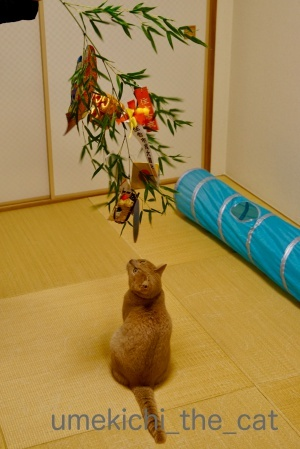
でっかい猫の縁起物！！

我が家の招き猫さん、今年はどっしり腰を据えて福を招いてくださる様です＾＾
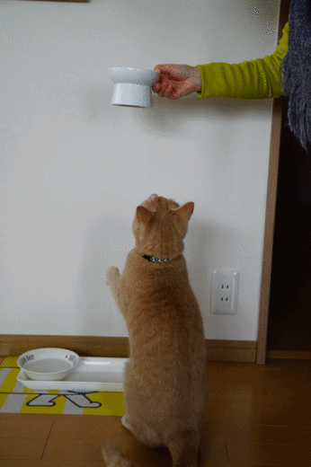
招き猫ポーズはこちらで＾＾
招くというより引き寄せてますねw
以下私の覚書。
えびす神社にはヒルコ神系と事代主系の二系統あり。
（詳しいことはWikiにて）
ヒルコ神系の総本社が兵庫西宮市の西宮神社、
事代主系の総本社が島根松江市の美保神社。
↑ガブッと一押し↑
1月10日はえびす神社の例祭「十日戎」通称「えべっさん」でした。
全国的に有名なのは兵庫 西宮神社のえべっさん。
朝の開門と同時に境内を走り抜け一番乗りが福男となるあの神社です。
大阪では今宮戎神社のえべっさん。せまーい路地みたいなところにある神社に
三日間で（9日：宵えびす 10日：本えびす 11日：残り福）100万人もの人出があるそうですよ。
我が家は毎年住吉大社のえべっさんに行ってます。
今年は9日の宵えびすに行ってきましたよ。
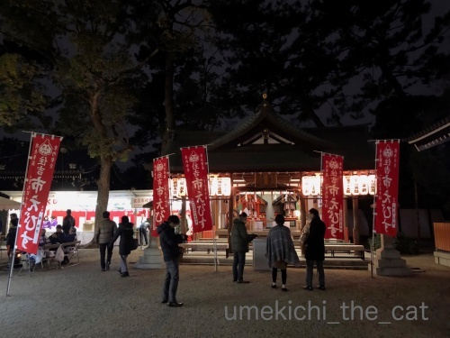
今宮戎はヘリコプターの中継が出て上空から混雑ぶりがリポートされるんですが
すみよっさんだとこんな感じ。余裕でお参り出来ます。

この日は朝から祈祷木のお焚き上げもあったのでその火がまだありました。

御祈祷をお願いする方も。
このお祭りのメインは福笹をいただいて「縁起物」といわれるチャームの様なものを付けてもらうこと。
我が家も福笹を授与していただき縁起物をつけてもらいました。
福笹にはおっちゃんたちが鐘を打ち鳴らしながら景気付けをしてくれました＾＾
（この景気付け、正式名称は何て言うんだろう・・・
この説明じゃ状況が良くわからないですよね。動画を探してみたのですが見つけられなかった・・・）
縁起物をつけてくれたのは去年と同じ福おばちゃんw
今年もやっぱりおまけしてくれました
ビバ！おばちゃん同士のシンパシー0(≧▽≦)0
そして我が家の福笹の総仕上げは
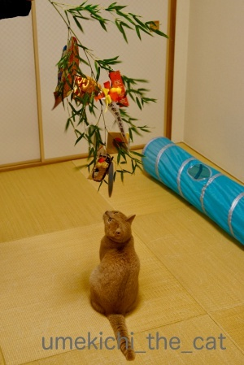
でっかい猫の縁起物！！

我が家の招き猫さん、今年はどっしり腰を据えて福を招いてくださる様です＾＾
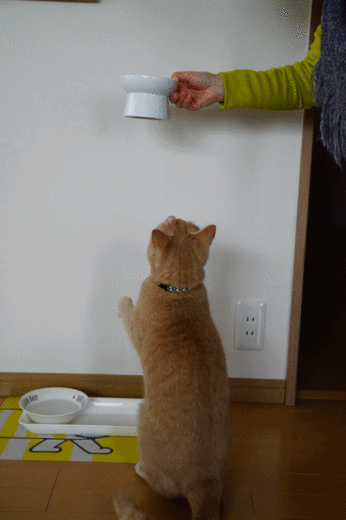
招き猫ポーズはこちらで＾＾
招くというより引き寄せてますねw
以下私の覚書。
えびす神社にはヒルコ神系と事代主系の二系統あり。
（詳しいことはWikiにて）
ヒルコ神系の総本社が兵庫西宮市の西宮神社、
事代主系の総本社が島根松江市の美保神社。
そしてブロックはこうなった〜年末年始のまとめその２〜 [梅吉]
前記事の発泡スチロールのブロックは
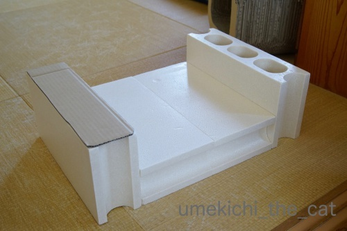
接着剤でくっ付けて梅吉のあご乗せベッドになりました＾＾
ヘッドボード型にしようかとも思ったのですが収まりが良い様なので両翼型に。
一翼に貼ってある段ボールは
「お顔を乗せた時あごが落ちたらかわいそうだから・・・」とのおっとの気遣いですが
穴は大事なお遊びアイテムなのでもう一翼のはそのままに。

新しいものに全く警戒しない梅吉さんが早速ご使用。
飼い主の思惑通りあご乗せてます！
おとーさん大喜びwww
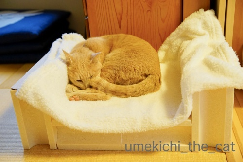
ブロック4個で4.8kgの梅吉が使ってこのサイズ感。

空いているスペースに湯たんぽを仕込んだりできます。
（おちりの方のチェック柄が湯たんぽ＾＾）
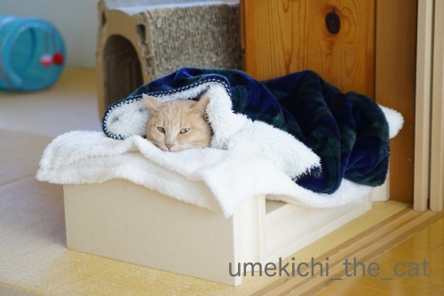
日々ご使用
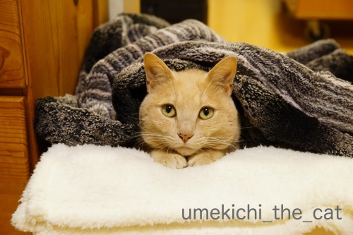
あご乗せスペースにおててもプラス0(≧▽≦)0
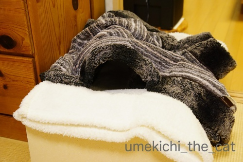
梅吉の抜け殻。
ここに手を入れるとあったかくてサイコーです(๑˃̵ᴗ˂̵)و
ブロックの組み合わせ方次第でいろんな形・大きさの物が作れそうです。
今度は独創的な型のベッドに挑戦してみようかしら・・・
階段箪笥みたいなタワーもいいわねぇ・・・と膨らむ妄想w
↑ガブッと一押し↑
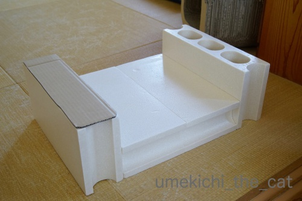
接着剤でくっ付けて梅吉のあご乗せベッドになりました＾＾
ヘッドボード型にしようかとも思ったのですが収まりが良い様なので両翼型に。
一翼に貼ってある段ボールは
「お顔を乗せた時あごが落ちたらかわいそうだから・・・」とのおっとの気遣いですが
穴は大事なお遊びアイテムなのでもう一翼のはそのままに。

新しいものに全く警戒しない梅吉さんが早速ご使用。
飼い主の思惑通りあご乗せてます！
おとーさん大喜びwww
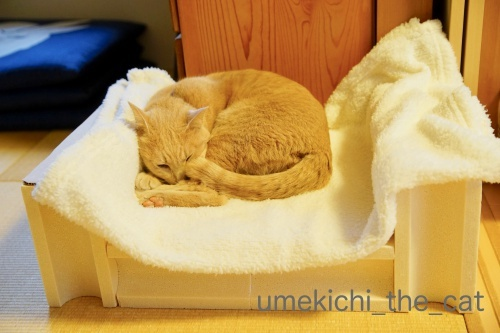
ブロック4個で4.8kgの梅吉が使ってこのサイズ感。

空いているスペースに湯たんぽを仕込んだりできます。
（おちりの方のチェック柄が湯たんぽ＾＾）
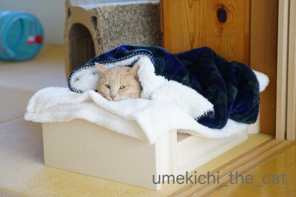
日々ご使用
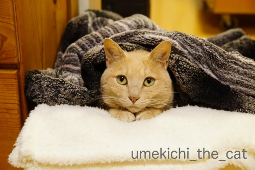
あご乗せスペースにおててもプラス0(≧▽≦)0
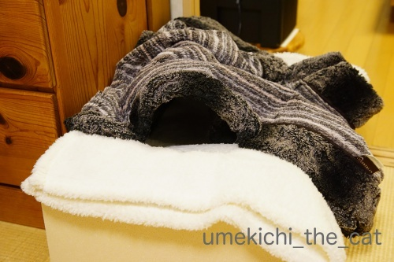
梅吉の抜け殻。
ここに手を入れるとあったかくてサイコーです(๑˃̵ᴗ˂̵)و
ブロックの組み合わせ方次第でいろんな形・大きさの物が作れそうです。
今度は独創的な型のベッドに挑戦してみようかしら・・・
階段箪笥みたいなタワーもいいわねぇ・・・と膨らむ妄想w
ブロックは何になる？〜年末年始のまとめその１〜 [梅吉]
年末、おっとがホームセンターでこんなものを買ってきました。

発泡スチロールで出来たブロックです。一個300円くらいだったかな。

当然警備主任のチェックが入ります。
発泡スチロール、先日ぽちの輔さんちのニャンズさんが大活躍されていたのを思い出して
ちょっと嫌な予感がしたのですが・・・
（今の所）梅吉は大丈夫なようです。ま、猫様なのでいつ気が変わるかわかりませんけどw

こういう穴のあるものはこうしたくなっちゃいますよねー。

さすが！ノリがいいね！！梅吉さん0(≧▽≦)0
手探りな感じが楽しいかな。

見えてるのになかなか掴めないのも楽しさ倍増！

お目目まっくろだねー！
おもちゃとしても使えるブロックですがこれはあるものになる予定なのです。
それは！次回の記事で＾＾
（引っ張りますw）
肉球の魔術師と錦卵 [梅吉]
Macジーニアスの梅吉さんです。
肉球でMacを操作しますよ。キリッ

梅吉さん？後ろに見えている画面が見慣れないものになっていますが
通常の画面に戻すにはどうすれば良いのでしょうか？？もしもーし？？？
おっとがノートPCの画面を立てっぱなしで離れるとすかさずキーボードの上に乗る梅吉。
（私は画面を倒してから離れるので被害はありません＾＾）
先日は華麗な肉球キーボード操作でこんなソースを表示してくれました (＠◇＠)
なんだ？この画面。
不思議な画面の他にはアクセシビリティのボイスオーバー（画面読み上げ機能です）を立ち上げ
ズーム機能で画面を拡大したりしてくれます。
老後のおとーさんを心配して早めに備えよう！との事なのでしょうかw
FBへの投稿も大好きですよ！
梅吉の足元にコメントがチラッと見えていますが・・・・
おお！「wwwwwww」との書き込み！
「梅吉、おとーさんのFBみてワロタ？」「誰かのコメントに草生えた？」
と笑っていたのですが・・・
以下ちょっと尾籠なお話。
このちょっと前に梅吉はうんPをなさっていたのです。
ちょっと手が離せなくてうんP後のおちりのチェックを怠っていたら
おちりから未消化の猫草が数本飛び出たままになっておりました(⌒_⌒;
梅吉としては「わしのおちりから草（www）」と現状＆惨状を伝えたかったのかもしれませんが
下僕二人はまったく気付かずに笑っていたという出来事でございました。
Macジーニアス梅吉はキーボードの操作もコメントも
メッセージ性に富んでいるようです(*>艸<)
梅吉のおちりから飛び出た草はちゃんと引っ張って取りましたよ。
その後、おとーさんはキーボードの上のお掃除をしてました(*>艸<)
はい！！申し訳ありませんでした。
補足：皆さんご存知かと思いますが念のために。
ネット用語で笑う事を「w」で表現しますよね。
この「www」が「草が生えている」ように見えるため
「○○で笑った（ワロタ）」を「○○で草」とネットの世界では表現します。
お節介な解説でしたー。
我が家の2019年のお正月 [梅吉]


カフェオレ色の梅吉

梅吉 2023年8月10日 永眠


梅吉と出会った譲渡会

犬猫の理由なき殺処分ゼロ
妄想広告
UMEKICHI 光

爆発的に早い！
時々攻撃的！
Thanks to Mr.Boss365
爆発的に早い！
時々攻撃的！
Thanks to Mr.Boss365